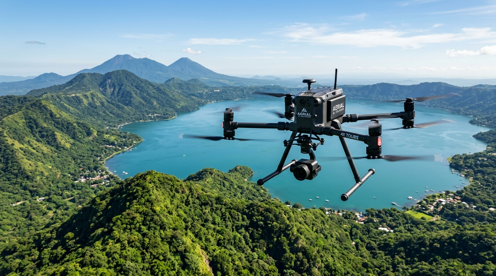
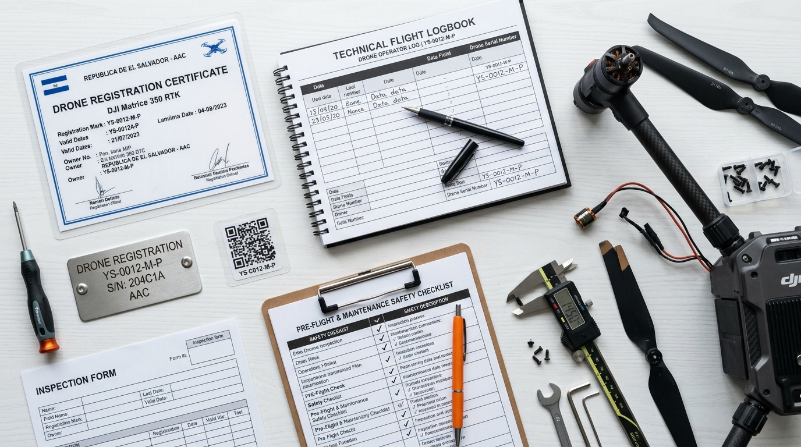
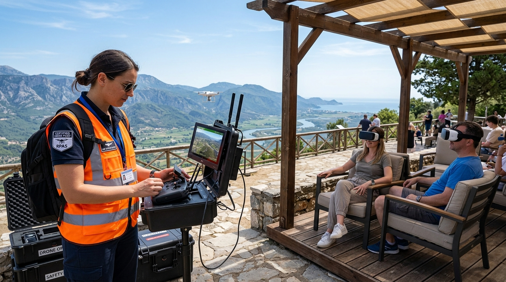

Este formulario censal acredita formalmente al piloto en los registros de la autoridad aeronáutica. Debe presentarse de forma presencial o por la plataforma institucional de la AAC acompañado de:
• Fotocopia de Documento Único de Identidad (DUI) o Pasaporte vigente.
• Comprobante de dirección física y teléfono de contacto en El Salvador.
• Compromiso formal firmado de apego a la normativa RAC-RPAS y respeto al espacio aéreo.
• Comprobante de pago de derechos de registro de operario expedido en Colecturía de la AAC.
DICTAMEN TÉCNICO INICIAL • CONSULTORÍA AERONÁUTICA
Hoja de Ruta Legal para Operar Drones en Turismo y VR
Dictamen pericial sobre matriculación de aeronaves, habilitación de pilotos, aranceles reales y blindaje regulatorio bajo la normativa RAC-RPAS de El Salvador.
JURISDICCIÓN
AAC EL SALVADOR
LOAC ART. 92 & 172

OPERACIÓN EN ESPACIO AÉREO CLASE G • PANORAMA NACIONAL
Conclusión Jurídico-Aeronáutica Principal
Para un emprendimiento comercial de turismo inmersivo (como vuelos panorámicos con visores de Realidad Virtual para comensales en restaurantes y miradores), la figura legal aplicable es Trabajo Aéreo Comercial RAC-RPAS 10.010 • Pág. 69.
Recomendación Estratégica: Homologar la operación bajo Categoría Clase "A" con Certificado CORPAS. Esto permite operar aeronaves comerciales de menos de 25 kg mediante un proceso documental abreviado, con vigencia anual y tiempos de resolución significativamente más ágiles que la Clase B.
Los 4 Pilares de la Legalización Oficial
1. Identificación del Operario: Formulario oficial AAC-ING-000-F2 presentado ante la AAC en Ilopango.
2. Matriculación de la Aeronave: Formulario AAC-ING-000-F1 para asignación de placa metálica YS-XXXX-M-P y código QR.
3. Póliza de Responsabilidad Civil: Cobertura obligatoria por daños a terceros según el Art. 172 de la Ley Orgánica de Aviación Civil.
4. Autorización CORPAS: Certificado AAC-1128 que confiere validez jurídica a la explotación comercial del espacio aéreo.
Alcance Operacional en Turismo Inmersivo
La transmisión de señal en vivo a visores de Realidad Virtual para comensales clasifica legalmente como una operación comercial en espacio aéreo no controlado (Clase G). Exige piloto debidamente habilitado, observador visual en línea de vista directa (VLOS) y aeronaves dotadas de protecciones de rotor para mitigar cualquier riesgo operacional en tierra.
PERSONAL AERONÁUTICO • PROCESO DESDE CERO
Habilitación del Piloto de Dron: Clase A y Clase B
Requerimientos técnicos, lugares oficiales de gestión en El Salvador y formularios para personas naturales sin experiencia previa.
RAC-RPAS
ARTS. 5.020 & 6.055
PILOTO CLASE "A" (TRABAJO AÉREO)
COSTO PILOTO: ~$295 USD
Acreditación requerida para operar aeronaves de hasta 25 kg en vuelos visuales (VLOS) dentro de 500 metros:
- Edad Mínima: 18 años cumplidos para actividades comerciales (16 años recreativo con carta notariada de padres).
- Formulario Oficial: Llenado del formulario
AAC-ING-000-F2con DUI o pasaporte y datos de contacto en El Salvador. - Mantenimiento de Aptitud: Acreditar en bitácora personal un mínimo de 3 horas de vuelo en los últimos 3 meses RAC-RPAS 4.025(a) • Pág. 26.
- Entrenamiento Anual: La AAC valida una autodeclaración de entrenamiento continuo anual para pilotos Clase A RAC-RPAS 4.025(b) • Pág. 26.
- Declaración Jurada Notariada: Formulario
AAC-ING-000-F4declarando apego a procedimientos de vuelo y respeto al derecho de vía de aeronaves tripuladas.
PILOTO CLASE "B" (ESPECÍFICA / COMPLEJA)
COSTO PILOTO: ~$760 USD
Acreditación exigida para operaciones de riesgo superior (peso hasta 150 kg, BVLOS, o proximidad a aglomeraciones):
- Edad Mínima: 18 años cumplidos obligatorios RAC-RPAS 6.060 • Pág. 41.
- Formación Teórica y Práctica Formal: Syllabus de 8 asignaturas obligatorias (Regulación RPAS, Espacio Aéreo, Seguridad Operacional, Factores Humanos, Meteorología, Aviónica, Procedimientos y Vuelos Prácticos).
- Supervisión Jerárquica: Las horas en bitácora deben ser convalidadas por el Jefe de Pilotos Remotos de la organización RAC-RPAS 4.025(c) • Pág. 26.
- Demostración Práctica AAC: Evaluación en campo ante inspectores del Departamento de Ingeniería Aeronáutica durante la Fase 4 del proceso CORPAS.
- Custodia Documental: Archivo de expedientes de cualificación por un mínimo de 3 años CA-RAC-RPAS 6.065 (5.02) • Pág. 138.
Sedes Físicas y Virtuales para los Trámites en El Salvador
1. Colecturía e Ingeniería AAC:
Km 9 ½ Carretera Panamericana, contiguo a Zona Franca San Bartolo, Ilopango. Recepción formal de solicitudes, cotejo de DUI y pago en ventanilla oficial.
Km 9 ½ Carretera Panamericana, contiguo a Zona Franca San Bartolo, Ilopango. Recepción formal de solicitudes, cotejo de DUI y pago en ventanilla oficial.
2. Módulo Virtual AAC:
Plataforma en línea "Gestión de Operador Drones (RPA)" en el portal institucional
Plataforma en línea "Gestión de Operador Drones (RPA)" en el portal institucional
aac.gob.sv para descarga de formularios y subida de archivos digitales.
3. Academias Autorizadas:
Centros autorizados bajo RAC-RPAS 20.025, diplomados aeronáuticos y polígonos de vuelo certificados (mínimo 50m × 50m × 120m de volumen seguro).
Centros autorizados bajo RAC-RPAS 20.025, diplomados aeronáuticos y polígonos de vuelo certificados (mínimo 50m × 50m × 120m de volumen seguro).
AERONAVEGABILIDAD • IDENTIFICACIÓN OFICIAL
Inscripción y Matrícula del Dron (Formulario F1)
Requisitos documentales, placas físicas indelebles, código QR y estructura de matrícula nacional salvadoreña.
RAC-RPAS
SUBPARTE L • ART. 13.005

EXPEDIENTE DE MATRÍCULA Y PLACA METÁLICA YS-XXXX-M-P
Estructura Oficial de la Matrícula Salvadoreña
YS – [XXXX] – M – P
• YS: Marca de nacionalidad salvadoreña otorgada por la AAC.
• [XXXX]: Número correlativo alfanumérico otorgado por el registro.
• M: Tipo de aeronave (M = Multirrotor, A = Ala Fija, H = Helicóptero).
• P: Pertenencia Particular / Privada comercial.
• [XXXX]: Número correlativo alfanumérico otorgado por el registro.
• M: Tipo de aeronave (M = Multirrotor, A = Ala Fija, H = Helicóptero).
• P: Pertenencia Particular / Privada comercial.
Requisitos para Llenar el Formulario AAC-ING-000-F1
El propietario debe consignar formalmente ante la AAC RAC-RPAS 13.010 • Pág. 79:
- Ficha Técnica de la Aeronave: Fabricante, modelo exacto, número de serie de fábrica y peso máximo de despegue (MTOM).
- Estación Remota (Control RPS): Fabricante, modelo y número de serie del radio control.
- Frecuencias de Enlace C2: Bandas de operación inalámbrica (ej. 2.4 GHz, 5.8 GHz).
- Evidencia Legal de Propiedad: Factura comercial de compra a nombre del titular o documento de compraventa notariado.
- Cuatro (4) Fotografías Obligatorias: Tomas a color nítidas: vista frontal, vista superior, vista inferior y vista lateral.
- Número de Póliza de Seguro de Responsabilidad Civil: Conforme al Art. 172 de la Ley Orgánica de Aviación Civil.
- Placas Físicas Grabadas y Código QR: Debe instalarse en el dron y en el control una placa metálica grabada con la matrícula y el sticker QR oficial.
MATRIZ COMPARATIVA • ESPECIFICACIONES TÉCNICAS
Comparación de Limitaciones: Clase "A" vs. Clase "B"
Diferencias jurídicas, operacionales y requerimientos técnicos exigidos por la reglamentación salvadoreña.
RAC-RPAS
SUBPARTES D & E
| Parámetro Operacional | Categoría Clase "A" (Abierta) | Categoría Clase "B" (Específica) | Detalles a tomar en cuenta |
|---|---|---|---|
| Rango de Peso (MTOM) | 0.200 kg a 25.0 kg | 0.200 kg a 150.0 kg | Clase A recomendada para multirrotores comerciales ligeros (< 2 kg). |
| Envergadura Máxima | Menor a 1.0 metro | Menor a 3.0 metros | Drones tipo DJI Avata y Mavic cumplen holgadamente (< 0.4 m). |
| Distancia Máxima Horizontal | Menor a 500 metros desde la RPS | Definida por estudio SORA y enlace C2 | 500 m cubre con amplitud el radio visual de restaurantes y miradores. |
| Línea de Visión (Visual Flight) | Estricto VLOS (Visual Line of Sight) | VLOS, EVLOS (observadores) o BVLOS | En turismo VR con visores se exige siempre Observador VLOS. |
| Altitud Máxima (AGL) | 120 m (400 ft) (+15m sobre obstáculo) | 120 m estándar (ampliable según SORA) | 120 m sobre terreno ofrece panorámicas paisajísticas de alta calidad. |
| Visibilidad Meteorológica | Mínimo 1.5 km radial | Mínimo 5.0 km radial | Clase A otorga mayor flexibilidad operativa en días con bruma leve. |
| Proximidad a Personas | Mínimo 30 m (15 m con consentimiento) | Matriz SORA / paracaídas de emergencia | Mesas al aire libre exigen distancia de 15 m o protección de techo/pérgola. |
| Identificación Remota (Remote ID) | Placa física y calcomanía con Código QR | Módulo de transmisión activa de telemetría | Clase A ahorra el costo de módulos de transmisión radial activa. |
| Vigencia del CORPAS | 1 año (Trámite documental ágil) | 3 años (Proceso complejo de 5 fases) | Clase A reduce el tiempo de salida al mercado de meses a semanas. |
Recomendaciones Técnicas de Equipos DJI (Importancia de la Protección en los Rotores)
RAC-RPAS 5.035(b)(4) & 9.030La normativa de la AAC exige medidas mecánicas de mitigación para autorizar vuelos comerciales cercanos a instalaciones o personas. Es mandatorio que los drones dispongan de protectores integrales de hélices (rotor guards) para prevenir laceraciones ante un contacto accidental:
RECOMENDADO VR
DJI Avata 2
MTOM: 377 g • Categoría Clase A
Protección Integrada de Fábrica:
Chasis cerrado tipo Cinewhoop con guardas de rotor integrales que cubren el 100% de las aspas.
• Ideal para turismo inmersivo y FPV: transmisión O4 de ultra-baja latencia hacia visores VR.
• Botón de parada de emergencia que detiene la aeronave y la deja en vuelo estacionario automático.
• Máxima seguridad para operar sobre terrazas o miradores.
Cumplimiento Inmediato de RAC-RPAS
DJI Mini 4 Pro
MTOM: ~290 g (con guardas) • Clase A
Guardas Requeridas:
Accesorio oficial DJI 360° Propeller Guard (jaula circular completa desmontable).
• Operación sumamente silenciosa que no perturba el ambiente de comensales en restaurantes.
• Detección omnidireccional de obstáculos con sensores visuales avanzados.
• Cámara 4K con rotación vertical para contenido en redes.
Requiere instalar accesorio 360°
DJI Air 3 / Mavic 3
MTOM: 720 g - 895 g • Clase A
Guardas Requeridas:
Protectores de hélices reforzados para despegue y aterrizaje en zonas con personas.
• Alta resistencia al viento (hasta 12 m/s) en miradores de montaña o lagos volcánicos.
• Doble cámara teleobjetivo para tomas paisajísticas a mayor distancia.
• Por su mayor masa, exige respetar estrictamente los 30 m de separación.
Mayor resistencia a vientos en altura
RUTA CRÍTICA • CERTIFICADO DE OPERACIÓN
Paso a Paso para Operación Comercial y CORPAS
Inspector interactivo de formularios y expedientes técnicos requeridos por el Departamento de Ingeniería Aeronáutica.
DOCUMENTO FINAL
CORPAS AAC-1128
PASO OBLIGATORIO 1
Arancel AAC: ~$30.00 USD
Inscripción del Operario de RPA (AAC-ING-000-F2)
Lugar de Radicación: Dirección de Seguridad de Vuelo / Ventanilla de Recepción AAC, Ilopango.
DESGLOSE FINANCIERO REGULATORIO • EL SALVADOR
Presupuesto
Inversión inicial requerida para habilitación legal y operativa, separada por requerimientos del Dron y del Piloto.
MODALIDAD
Habilitación del Piloto
CLASE A
1. Curso Teórico-Práctico (Academia Certificada)
$250.00
2. Inscripción de Operario AAC (Formulario F2)
$30.00
3. Bitácora de Vuelo y Validación de Recencia (3 hrs)
$15.00
4. Evaluación Práctica Fase 4 / Certificado Médico
$0.00
Subtotal Piloto
$295.00 USD
Legalización y Seguridad del Dron
CLASE A
1. Matrícula e Inscripción de Aeronave AAC (F1)
$45.00
2. Placa Metálica Grabada Láser & Calcomanía QR
$15.00
3. Protectores de Hélices / Guardas de Rotores
$35.00
4. Póliza Seguro Responsabilidad Civil (1 Año - Art. 172)
$360.00
5. Declaración Jurada Notariada (F4) / Manuales MO-SMS
$25.00
6. Derechos de Certificado CORPAS AAC (AAC-1128)
$100.00
Subtotal Dron
$580.00 USD
PRESUPUESTO TOTAL CONSOLIDADO • CLASE "A"
Inversión Regulatoria Inicial para Puesta en Marcha
Incluye piloto habilitado, dron matriculado con placa YS, seguro anual y permiso CORPAS.
$875.00
VALORES EN USD
SEGURIDAD OPERACIONAL • ENTORNO TURÍSTICO
Restricciones Operacionales y Seguridad para VR
Regulaciones indispensables para operar con turistas y visores VR en mesas de restaurantes y miradores aliados.
PROTOCOLOS
RAC-RPAS 4.020 & 5.010

PILOTO Y OBSERVADOR + COMENSALES BAJO PÉRGOLA CON VISORES VR
Rol Obligatorio del Observador Visual (RAC-RPAS 4.020 g)
La legislación salvadoreña estipula que cuando se transmita video en tiempo real a visores de Realidad Virtual (modo FPV), el piloto no puede operar en solitario. Es obligatorio contar con un Observador Visual en línea de vista constante (VLOS) que vigile el espacio aéreo y mantenga comunicación directa e ininterrumpida con el piloto.
Distancias a Mesas y Clientes (Art. 5.010 f-g)
• Zona de Seguridad: Mantener una separación mínima de 30 metros de personas no involucradas.
• Reducción a 15 metros: Permitida únicamente con clientes que han otorgado su consentimiento expreso al contratar la experiencia.
• Estructuras de Protección: Los comensales deben ubicarse preferentemente bajo terrazas, toldos o pérgolas que provean resguardo físico.
Protectores de Hélices Obligatorios (Art. 5.035 b.4)
Para cualquier operación comercial cercana a terrazas o miradores, las aeronaves multirrotor deben portar de forma obligatoria y permanente protectores de hélices (propeller guards) instalados para evitar laceraciones en caso de aterrizaje imprevisto.
Zonas Prohibidas y Regla de 48 Horas (RAC 13)
Prohibido volar a menos de 6 km de aeropuertos internacionales (MSRP / MSSS) y sobre instalaciones de gobierno o presas hidroeléctricas. Cualquier incidente con daños a terceros superiores a $500.00 USD debe reportarse a la AAC en un plazo no mayor a 48 horas.
FLUJOGRAMA DE HOMOLOGACIÓN • RUTA CRÍTICA PASO A PASO
Diagrama de Flujo: Legalización y Puesta en Marcha
Secuencia cronológica de pasos, formularios oficiales y entidades para tener el dron 100% legal y operativo en El Salvador.
ESTADO FINAL
CORPAS APROBADO
1
Piloto & Bitácora
Capacitación
2
Registro Operario
Formulario F2
3
Matrícula Dron
Formulario F1
4
Seguro & Placa
LOAC Art. 172
5
Declaración Jurada
Formulario F4
6
Emisión CORPAS
Cert. AAC-1128
7
Operación en Campo
Vuelo VR Legal
FASE 1 DE 7
ACREDITACIÓN DE APTITUD
Capacitación del Piloto y Registro de Bitácora
El aspirante a piloto comercial debe completar su formación básica y acreditar en su bitácora personal un mínimo de 3 horas de vuelo durante los últimos 3 meses. Debe dominar los modos de vuelo manual, procedimientos de pérdida de enlace y maniobras de aterrizaje de emergencia.
Entidad Responsable & Documentación
Academia de Vuelo Certificada / Instructor Autorizado
Requisitos Clave
• Mayor de 18 años.
• Bitácora con 3 horas certificadas.
• Certificado de aprobación teórico-práctico.
• Bitácora con 3 horas certificadas.
• Certificado de aprobación teórico-práctico.
Tiempo Estimado de Gestión:
1 a 2 Semanas